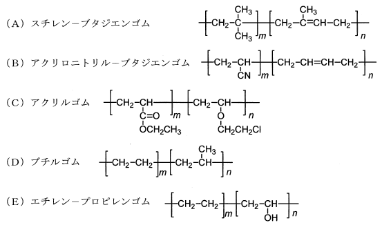

令和元年度（再試験） 問15 高分子化学
次のゴムの名称と、その代表的な化学構造式との組合せとして、最も適切なものはどれか。

①
AとB
②
AとD
③
BとC
④
CとD
⑤
DとE
正答
③ BとC
A：スチレンはビニルベンゼンです。芳香環が含まれていないことから誤りです。
D：ブチルゴムはイソブチレンをベースとした少量のイソプレンとの共重合体です。[CH2-C(CH3)]nがベースとなります。
E：エチレンとプロピレンの共重合体であるため、置換基は-OHではなく-CH3です。